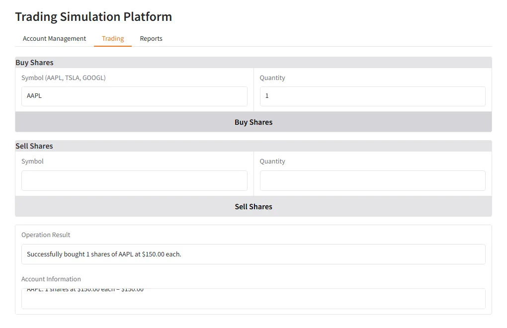

Week 3 Day 5 · An engineering team that builds an app
Four agents design, code, test and put a Gradio UI on a trading-account module; plus the React crew runner and the dynamic-tasks exercise.
Course lectures (Udemy) · code verified against the repoWhat this day builds
"We're going to turn our coder into an engineering team": an engineering lead ("depicted here by this person chilling out because, you know, that's what leads do"), a backend engineer, a frontend engineer and a test engineer "trying to break everything". Given plain-English requirements, the crew writes a design, a Python module, a Gradio app and unit tests. The module is a trading account, chosen on purpose: Week 6's AI traders need one, so this is "a two for one… give us a head start in week six".
TypeScript: pnpm engineering runs the same four agents on the same YAML through src/minicrew.ts. The agents still write Python, because that is the assignment; only the runner is TypeScript. The week's React app, the crew runner, is at the end of this page.
| Lecture | Length | What happens |
|---|---|---|
| 16 · The team in YAML | 10:21 | Four agents on three providers, four tasks, "IMPORTANT: Output ONLY the raw Python code". |
| 17 · crew.py and main.py | 8:09 | Who may execute code; Cursor's "disaster"; the trading-account requirements. |
| 18 · Running the team | 8:30 | An obscure YAML failure, a five-minute run, uv add gradio, and a working trading app. |
| 19 · Your team is hiring | 8:49 | Exercises: more agents, and tasks created at runtime with callbacks. |
The agents (lecture 16, 01:41–05:55)
Three placeholders make the crew reusable: {requirements}, {module_name} and {class_name}, "a little bit configurable". Each role gets the model the presenter thought suited it.
engineering_lead:
role: >
Engineering Lead for the engineering team, directing the work of the engineer
goal: >
Take the high level requirements described here and prepare a detailed design for the backend developer;
everything should be in 1 python module; describe the function and method signatures in the module.
The python module must be completely self-contained, and ready so that it can be tested or have a simple UI built for it.
Here are the requirements: {requirements}
The module should be named {module_name} and the class should be named {class_name}
backstory: >
You're a seasoned engineering lead with a knack for writing clear and concise designs.
llm: gpt-4o
backend_engineer:
role: >
Python Engineer who can write code to achieve the design described by the engineering lead
goal: >
Write a python module that implements the design described by the engineering lead, in order to achieve the requirements.
The python module must be completely self-contained, and ready so that it can be tested or have a simple UI built for it.
Here are the requirements: {requirements}
The module should be named {module_name} and the class should be named {class_name}
backstory: >
You're a seasoned python engineer with a knack for writing clean, efficient code.
You follow the design instructions carefully.
You produce 1 python module named {module_name} that implements the design and achieves the requirements.
llm: anthropic/claude-sonnet-4-5
frontend_engineer:
role: >
A Gradio expert to who can write a simple frontend to demonstrate a backend
goal: >
Write a gradio UI that demonstrates the given backend, all in one file to be in the same directory as the backend module {module_name}.
Here are the requirements: {requirements}
backstory: >
You're a seasoned python engineer highly skilled at writing simple Gradio UIs for a backend class.
You produce a simple gradio UI that demonstrates the given backend class; you write the gradio UI in a module app.py that is in the same directory as the backend module {module_name}.
llm: anthropic/claude-sonnet-4-5
test_engineer:
role: >
An engineer with python coding skills who can write unit tests for the given backend module {module_name}
goal: >
Write unit tests for the given backend module {module_name} and create a test_{module_name} in the same directory as the backend module.
backstory: >
You're a seasoned QA engineer and software developer who writes great unit tests for python code.
llm: anthropic/claude-sonnet-4-5| Line(s) | Code | What it does & why |
|---|---|---|
| 1–12 | engineering_lead: … prepare a detailed design for the backend developer; everything should be in 1 python module … llm: gpt-4o | The designer, on "the big guy": "I've also run this with GPT-4o mini and it runs just fine… you get a bit more comprehensive, extensive solutions if you use its bigger cousin." |
| 15–27 | backend_engineer: … Write a python module that implements the design … llm: anthropic/claude-sonnet-4-5 | The coder. The video uses anthropic/claude-3-7-sonnet-latest: "a little bit less stable, but nonetheless, it's a great coding model". |
| 29–38 | frontend_engineer: role: > A Gradio expert to who can write a simple frontend … | Writes app.py. ("to who" is a typo in the video and the repo.) |
| 40–47 | test_engineer: … Write unit tests for the given backend module {module_name} … | "I'm slightly abusing the word there. It's not like a QA engineer. This is going to be a Python coder who knows how to write unit tests." The video runs it on deepseek/deepseek-chat: "Why don't we take a risk?" |
The tasks (lecture 16, 05:55–10:21)
Each task here maps one-to-one to an agent. "This is one of those times when it feels like OpenAI's Agents SDK is sort of more straightforward." A useful way to think about the split: "you can think of the tasks as being the user prompts and the agents as defining the system prompts". The placeholders work everywhere in the YAML, even in file names: output/{module_name}_design.md.
design_task:
description: >
Take the high level requirements described here and prepare a detailed design for the engineer;
everything should be in 1 python module, but outline the classes and methods in the module.
Here are the requirements: {requirements}
IMPORTANT: Only output the design in markdown format, laying out in detail the classes and functions in the module, describing the functionality.
expected_output: >
A detailed design for the engineer, identifying the classes and functions in the module.
agent: engineering_lead
output_file: output/{module_name}_design.md
code_task:
description: >
Write a python module that implements the design described by the engineering lead, in order to achieve the requirements.
Here are the requirements: {requirements}
expected_output: >
A python module that implements the design and achieves the requirements.
IMPORTANT: Output ONLY the raw Python code without any markdown formatting, code block delimiters, or backticks.
The output should be valid Python code that can be directly saved to a file and executed.
agent: backend_engineer
context:
- design_task
output_file: output/{module_name}
frontend_task:
description: >
Write a gradio UI in a module app.py that demonstrates the given backend class in {module_name}.
Assume there is only 1 user, and keep the UI very simple indeed - just a prototype or demo.
Here are the requirements: {requirements}
expected_output: >
A gradio UI in module app.py that demonstrates the given backend class.
The file should be ready so that it can be run as-is, in the same directory as the backend module, and it should import the backend class from {module_name}.
IMPORTANT: Output ONLY the raw Python code without any markdown formatting, code block delimiters, or backticks.
The output should be valid Python code that can be directly saved to a file and executed.
agent: frontend_engineer
context:
- code_task
output_file: output/app.py
test_task:
description: >
Write unit tests for the given backend module {module_name} and create a test_{module_name} in the same directory as the backend module.
expected_output: >
A test_{module_name} module that tests the given backend module.
IMPORTANT: Output ONLY the raw Python code without any markdown formatting, code block delimiters, or backticks.
The output should be valid Python code that can be directly saved to a file and executed.
agent: test_engineer
context:
- code_task
output_file: output/test_{module_name}| Line(s) | Code | What it does & why |
|---|---|---|
| 6 | IMPORTANT: Only output the design in markdown format, … | "Otherwise it just wants to start writing the code." |
| 10 | output_file: output/{module_name}_design.md | With module_name = "accounts.py" the file is literally accounts.py_design.md. |
| 18–19 | IMPORTANT: Output ONLY the raw Python code without any markdown formatting, code block delimiters, or backticks. … | "These models love to output markdown… it's going to put that tick, tick, tick python at the top of the file, which means it won't be a valid Python file… unless you really highlight this is important, it's going to do it." |
| 21–23 | context: - design_task · output_file: output/{module_name} | The backend engineer sees the design and writes output/accounts.py. |
| 36–38, 48–50 | context: - code_task | The frontend and the tests both get the code, not the design. |
crew.py: who may run code (lecture 17, 00:00–03:45)
from crewai import Agent, Crew, Process, Task
from crewai.project import CrewBase, agent, crew, task
@CrewBase
class EngineeringTeam():
"""EngineeringTeam crew"""
agents_config = 'config/agents.yaml'
tasks_config = 'config/tasks.yaml'
@agent
def engineering_lead(self) -> Agent:
return Agent(
config=self.agents_config['engineering_lead'],
verbose=True,
)
@agent
def backend_engineer(self) -> Agent:
return Agent(
config=self.agents_config['backend_engineer'],
verbose=True,
allow_code_execution=True,
code_execution_mode="safe", # Uses Docker for safety
max_execution_time=500,
max_retry_limit=3
)
@agent
def frontend_engineer(self) -> Agent:
return Agent(
config=self.agents_config['frontend_engineer'],
verbose=True,
)
@agent
def test_engineer(self) -> Agent:
return Agent(
config=self.agents_config['test_engineer'],
verbose=True,
allow_code_execution=True,
code_execution_mode="safe", # Uses Docker for safety
max_execution_time=500,
max_retry_limit=3
)
@task
def design_task(self) -> Task:
return Task(
config=self.tasks_config['design_task']
)
@task
def code_task(self) -> Task:
return Task(
config=self.tasks_config['code_task'],
)
@task
def frontend_task(self) -> Task:
return Task(
config=self.tasks_config['frontend_task'],
)
@task
def test_task(self) -> Task:
return Task(
config=self.tasks_config['test_task'],
)
@crew
def crew(self) -> Crew:
"""Creates the research crew"""
return Crew(
agents=self.agents,
tasks=self.tasks,
process=Process.sequential,
verbose=True,
)// Week 3 Day 5 — the engineering team crew (TypeScript version of 3_crew/engineering_team)
// Four agents in sequence: the lead writes a design, the backend engineer writes accounts.py, the frontend engineer
// writes a Gradio app.py, the test engineer writes test_accounts.py. Backend and test engineer can run Python in Docker.
// The agents still write PYTHON (that is the course's assignment); only the crew runner is TypeScript.
import { consoleEvents, loadCrew, runSequential } from "./minicrew.js";
import { codeTool } from "./tools.js";
const requirements = `
A simple account management system for a trading simulation platform.
The system should allow users to create an account, deposit funds, and withdraw funds.
The system should allow users to record that they have bought or sold shares, providing a quantity.
The system should calculate the total value of the user's portfolio, and the profit or loss from the initial deposit.
The system should be able to report the holdings of the user at any point in time.
The system should be able to report the profit or loss of the user at any point in time.
The system should be able to list the transactions that the user has made over time.
The system should prevent the user from withdrawing funds that would leave them with a negative balance, or
from buying more shares than they can afford, or selling shares that they don't have.
The system has access to a function get_share_price(symbol) which returns the current price of a share, and includes a test implementation that returns fixed prices for AAPL, TSLA, GOOGL.
`;
const crew = await loadCrew("crews/engineering_team", { requirements, module_name: "accounts.py", class_name: "Account" });
await runSequential(crew, {
tools: { backend_engineer: [codeTool], test_engineer: [codeTool] },
outputDir: "output/engineering_team",
onEvent: consoleEvents,
});
console.log("\nFiles written to output/engineering_team/output/: accounts.py_design.md, accounts.py, app.py, test_accounts.py");| Line(s) | Code | What it does & why |
|---|---|---|
| 13–18 | def engineering_lead(self) -> Agent: return Agent(config=…, verbose=True,) | No code execution: "it's just meant to be designing stuff". |
| 20–29 | backend_engineer … allow_code_execution=True, code_execution_mode="safe", max_execution_time=500, max_retry_limit=3 | Writes and runs code in Docker. The video has max_execution_time=240 and max_retries=5; use the repo's max_retry_limit, the name the coder project uses too. |
| 31–36 | frontend_engineer … verbose=True, | Writes only. Running it "would bring up a Gradio UI in the Docker container. That'd be a whole different ball game." |
| 38–47 | test_engineer … allow_code_execution=True, code_execution_mode="safe", … | Should "not only write the unit tests but then to run the unit tests". |
| 49–71 | @task def design_task(self) … code_task … frontend_task … test_task | Four tasks, all configured in YAML. |
| 73–81 | @crew def crew(self) -> Crew: return Crew(agents=self.agents, tasks=self.tasks, process=Process.sequential, verbose=True,) | Plain sequential. The docstring "Creates the research crew" is a copy-paste leftover. |
| Line(s) | Code | What it does & why |
|---|---|---|
| 8–19 | const requirements = ` A simple account management system for a trading simulation platform. …`; | The course's requirements, word for word. |
| 21 | const crew = await loadCrew("crews/engineering_team", { requirements, module_name: "accounts.py", class_name: "Account" }); | Fill the three placeholders, everywhere in both YAML files. |
| 22–26 | await runSequential(crew, { tools: { backend_engineer: [codeTool], test_engineer: [codeTool] }, outputDir: "output/engineering_team", … }); | The same choice as the Python crew: only the backend and test engineers may run code (in Docker). |
Vibe coding, a warning from the presenter. Cursor suggested a crew() that listed every agent and task by hand. "All a disaster… it is common for LLMs to generate too much code… often people send me problems they've got and I can see that they've used an LLM to generate lots of code, because it will tend to err on the side of more." The fix is the two lines agents=self.agents and tasks=self.tasks.
main.py: the requirements (lecture 17, 03:45–08:09)
#!/usr/bin/env python
import sys
import warnings
import os
from datetime import datetime
from engineering_team.crew import EngineeringTeam
warnings.filterwarnings("ignore", category=SyntaxWarning, module="pysbd")
# Create output directory if it doesn't exist
os.makedirs('output', exist_ok=True)
requirements = """
A simple account management system for a trading simulation platform.
The system should allow users to create an account, deposit funds, and withdraw funds.
The system should allow users to record that they have bought or sold shares, providing a quantity.
The system should calculate the total value of the user's portfolio, and the profit or loss from the initial deposit.
The system should be able to report the holdings of the user at any point in time.
The system should be able to report the profit or loss of the user at any point in time.
The system should be able to list the transactions that the user has made over time.
The system should prevent the user from withdrawing funds that would leave them with a negative balance, or
from buying more shares than they can afford, or selling shares that they don't have.
The system has access to a function get_share_price(symbol) which returns the current price of a share, and includes a test implementation that returns fixed prices for AAPL, TSLA, GOOGL.
"""
module_name = "accounts.py"
class_name = "Account"
def run():
"""
Run the research crew.
"""
inputs = {
'requirements': requirements,
'module_name': module_name,
'class_name': class_name
}
# Create and run the crew
result = EngineeringTeam().crew().kickoff(inputs=inputs)
if __name__ == "__main__":
run()| Line(s) | Code | What it does & why |
|---|---|---|
| 14–25 | requirements = """ A simple account management system for a trading simulation platform. …""" | Plain English: deposits, withdrawals, buying and selling shares, portfolio value, profit and loss, holdings, transactions, and the rules against overdrawing or selling what you do not own. A get_share_price(symbol) with fixed test prices. |
| 26–27 | module_name = "accounts.py" · class_name = "Account" | Forgotten in the first attempt: "Ah, not so fast, you say. You notice that I'm missing the setting?" |
| 34–41 | inputs = {'requirements': requirements, 'module_name': module_name, 'class_name': class_name} · result = EngineeringTeam().crew().kickoff(inputs=inputs) | Fill the placeholders and run. The result is not printed; the files are the result. |
The run (lecture 18)
The first attempt failed. "I had some stray tabs going on… The error message I got was quite obscure… some long stack trace." The video's frames show the test_engineer: and test_task: keys mis-indented while he typed. "That's the deal that you make signing up for a framework like this, you get a lot out of the box… what you are trading off is the fact that some stuff is hidden from you."
A warning for local models: "I do imagine that this will stretch Ollama to the max… you may have limited success". If so, study the repo's example outputs instead. The run took about five minutes and left four files in output/.
The design file starts with a stray ```markdown line, despite the instruction; harmless in a .md. accounts.py has a get_share_price stub (AAPL 150, TSLA 800, GOOGL 2500) and an Account class with deposit, withdraw, buy, sell, portfolio value, profit or loss, holdings and transactions. He liked that get_holdings returns a copy: "a pro thing to have done. I wouldn't have even thought of that."
Running the app: cd output, uv run app.py ("uv run is the equivalent of Python when you're using uv environment") failed with ModuleNotFoundError: No module named 'gradio'. The fix was uv add gradio; the repo's pyproject.toml already lists it. Then: "you're getting like a raw reaction video here. I'm like astonished… This isn't a simple user interface. This is a really good user interface."
cd 3_crew/engineering_team
crewai run
cd output
uv run app.py # if gradio is missing: uv add gradio, then run again
example_output_new/app.py) running in this guide's environment: account "ed" with 10,000, then one AAPL share bought (test data).What you should see. Three tabs, "Account Management", "Trading" and "Reports". In the video: create "ed" with 10,000, buy one AAPL for $150.00, try to sell TSLA and get "Error: Insufficient shares to sell.", then sell the AAPL and read the transaction history. This guide repeated the same steps on the repo's example app and got the same messages. It also ran the generated unit tests: all pass.
| Repo folder | Files | Generated tests (run by this guide) |
|---|---|---|
example_output_new/ | design, accounts.py, app.py, tests; the run in the video | 15 pass |
example_output_4o/ | design, module, a six-tab app, tests | 21 pass |
example_output_mini/ | module and app only, "a more raw user interface" | none written |
Our run
This guide ran the engineering team on llama3.2 (local) for all four agents, with Docker running. All four files were written in 30 minutes, but the code does not work:
- The design (6.5 KB of markdown) is reasonable.
accounts.pyis 20 lines whose constructor calls methods that do not exist, such ascreate_accountandbuy_share.app.pyis a copy of that same class, with no Gradio at all.- The tests never import the module they test.
- Code execution failed on almost every attempt: "the Action Input is not a valid key, value dictionary".
The presenter's warning holds: "this will stretch Ollama to the max". Compare with the repo's example outputs above, whose tests pass. This crew needs a capable coding model.
Your team is hiring (lecture 19)
Two exercises.
- Grow the team. A real test engineer who writes and runs a test plan, a business analyst who fleshes out the requirements, a richer UI, different models.
- The real challenge: dynamic tasks. Today's crew is "very much on rails": one module, fixed at the start. Make the engineering lead return a structured list of modules (
output_pydantic), then create one coding task per module at runtime with a task callback. "You can create a task object at runtime while it's actually running… the callback can make it create another task." Then build something from your own job, "a website… an e-commerce platform… something to organize medical records".
Callbacks belong on the task, not the agent: "I was right the first time… the way you do it is at the task level". The CrewAI docs (docs.crewai.com/concepts/tasks) also show task guardrails, "a way to validate and transform outputs before they're passed to the next task", output_json, and asynchronous tasks.
from crewai.tasks.task_output import TaskOutput
def callback_function(output: TaskOutput):
# called when the task finishes; you could create new tasks here
print(output.raw)
Task(config=..., callback=callback_function)In the TypeScript runner the same hook is onEvent: every task_end event carries the output, so a dynamic version would parse the lead's module list there and push new tasks into crew.tasks before the loop reaches them.
The React crew runner (TypeScript)
CrewAI has no UI; you watch the terminal. The TypeScript project adds a small web app to run a crew and watch each task finish, the same pattern as Week 2's deep research app: a Hono API that streams events with Server-Sent Events, and a React page.
// A small API that runs a crew and streams its progress to the React page (Server-Sent Events).
// GET /api/crews lists the crews and their inputs; POST /api/run {crew, inputs} streams task_start / task_end events.
import { Hono } from "hono";
import { streamSSE } from "hono/streaming";
import { serve } from "@hono/node-server";
import { serveStatic } from "@hono/node-server/serve-static";
import { loadCrew, runSequential, type CrewEvent, type CrewOptions } from "../src/minicrew.js";
import { codeTool, searchTool } from "../src/tools.js";
// The crews that run sequentially, with the inputs their YAML expects and the tools each agent gets.
const CREWS: Record<string, { inputs: Record<string, string>; tools?: CrewOptions["tools"] }> = {
debate: { inputs: { motion: "There needs to be strict laws to regulate LLMs" } },
financial_researcher: { inputs: { company: "Apple" }, tools: { researcher: [searchTool] } },
coder: { inputs: { assignment: "Write a python program that prints the first 10 prime numbers" }, tools: { coder: [codeTool] } },
};
const app = new Hono();
app.get("/api/crews", (c) => c.json(Object.fromEntries(Object.entries(CREWS).map(([k, v]) => [k, v.inputs]))));
app.post("/api/run", async (c) => {
const { crew: name, inputs } = await c.req.json<{ crew: string; inputs: Record<string, string> }>();
const def = CREWS[name];
if (!def) return c.json({ error: `unknown crew ${name}` }, 400);
return streamSSE(c, async (stream) => {
const send = (e: CrewEvent | { type: "done" } | { type: "error"; message: string }) => stream.writeSSE({ data: JSON.stringify(e) });
try {
const crew = await loadCrew(`crews/${name}`, { ...def.inputs, ...inputs });
await runSequential(crew, { tools: def.tools, outputDir: `output/web/${name}`, onEvent: (e) => void send(e) });
await send({ type: "done" });
} catch (e) {
await send({ type: "error", message: String(e) });
}
});
});
app.use("/*", serveStatic({ root: "./web/dist" }));
const port = Number(process.env.PORT ?? 8789);
serve({ fetch: app.fetch, port });
console.log(`Crew runner API on http://localhost:${port}`);| Line(s) | Code | What it does & why |
|---|---|---|
| 11–15 | const CREWS = { debate: { inputs: { motion: … } }, financial_researcher: { …, tools: { researcher: [searchTool] } }, coder: { …, tools: { coder: [codeTool] } } }; | The sequential crews the page can run, with default inputs and tools. The stock picker (hierarchical) and the long engineering run stay on the command line. |
| 19 | app.get("/api/crews", (c) => c.json(…)) | The page asks which crews exist and what inputs each needs. |
| 21–35 | app.post("/api/run", async (c) => { … return streamSSE(c, async (stream) => { … await runSequential(crew, { …, onEvent: (e) => void send(e) }); … }); }); | Run the crew and forward every task_start and task_end event to the browser as it happens, then done (or error). |
| 37 | app.use("/*", serveStatic({ root: "./web/dist" })); | Serve the built React app from the same port. |
// Crew runner: pick a crew, edit its inputs, run it and watch each task finish (like CrewAI's verbose output).
import { useEffect, useState } from "react";
import { marked } from "marked";
type Event =
| { type: "task_start"; task: string; agent: string }
| { type: "task_end"; task: string; agent: string; output: string }
| { type: "done" }
| { type: "error"; message: string };
type Step = { task: string; agent: string; output?: string };
export function App() {
const [crews, setCrews] = useState<Record<string, Record<string, string>>>({});
const [crew, setCrew] = useState("debate");
const [inputs, setInputs] = useState<Record<string, string>>({});
const [steps, setSteps] = useState<Step[]>([]);
const [status, setStatus] = useState("");
useEffect(() => {
fetch("/api/crews").then((r) => r.json()).then((d) => {
setCrews(d);
setInputs(d.debate ?? {});
});
}, []);
function choose(name: string) {
setCrew(name);
setInputs(crews[name] ?? {});
setSteps([]);
setStatus("");
}
async function runCrew() {
setSteps([]);
setStatus("running");
const res = await fetch("/api/run", { method: "POST", headers: { "Content-Type": "application/json" }, body: JSON.stringify({ crew, inputs }) });
const reader = res.body!.getReader();
const decoder = new TextDecoder();
let buffer = "";
while (true) {
const { value, done } = await reader.read();
if (done) break;
buffer += decoder.decode(value, { stream: true });
const parts = buffer.split("\n\n");
buffer = parts.pop() ?? "";
for (const part of parts) {
const line = part.split("\n").find((l) => l.startsWith("data: "));
if (!line) continue;
const e = JSON.parse(line.slice(6)) as Event;
if (e.type === "task_start") setSteps((s) => [...s, { task: e.task, agent: e.agent }]);
else if (e.type === "task_end") setSteps((s) => s.map((x) => (x.task === e.task ? { ...x, output: e.output } : x)));
else if (e.type === "done") setStatus("done");
else setStatus(`error: ${e.message}`);
}
}
}
return (
<main className="wrap">
<h1>Crew Runner</h1>
<div className="row">
{Object.keys(crews).map((name) => (
<button key={name} className={name === crew ? "tab on" : "tab"} onClick={() => choose(name)}>
{name}
</button>
))}
</div>
{Object.entries(inputs).map(([k, v]) => (
<label key={k}>
{k}
<input value={v} onChange={(e) => setInputs({ ...inputs, [k]: e.target.value })} />
</label>
))}
<button className="run" onClick={runCrew} disabled={status === "running"}>
{status === "running" ? "Running…" : "Kick off"}
</button>
{status && status !== "running" && <p className="status">{status}</p>}
{steps.map((s) => (
<section key={s.task} className="step">
<h2>
{s.output ? "✅" : "⏳"} {s.task} <small>· {s.agent}</small>
</h2>
{s.output && <div className="out" dangerouslySetInnerHTML={{ __html: marked.parse(s.output) as string }} />}
</section>
))}
</main>
);
}| Line(s) | Code | What it does & why |
|---|---|---|
| 13–17 | const [crews, setCrews] = useState…; const [crew, setCrew] = …; const [inputs, setInputs] = …; const [steps, setSteps] = …; const [status, setStatus] = …; | The page's state: available crews, the chosen one, its inputs, the tasks so far, and the run status. |
| 19–24 | useEffect(() => { fetch("/api/crews").then(…) }, []); | Load the crew list once, on first render. |
| 33–56 | async function runCrew() { … const reader = res.body!.getReader(); … buffer.split("\n\n") … JSON.parse(line.slice(6)) … } | Read the streamed reply chunk by chunk. Each SSE message ends with a blank line and carries data: {json}; a task_start adds a step, a task_end fills in its output. |
| 62–76 | {Object.keys(crews).map((name) => <button …>)} … <input value={v} onChange={…} /> … <button className="run" onClick={runCrew} …> | A tab per crew, a text box per input, and the Kick off button (disabled while running). |
| 78–85 | {steps.map((s) => <section …>{s.output ? "✅" : "⏳"} … marked.parse(s.output) …)} | One card per task: an hourglass until it finishes, then the output rendered from markdown. |
cd week3-ts
pnpm install
pnpm build # type-check and build the React app into web/dist
pnpm api # then open http://localhost:8789Common mistakes
- YAML indentation: a key indented two spaces too far gives an obscure stack trace, not a helpful message. Check indentation first.
- Missing inputs: every
{placeholder}in the YAML needs a key ininputs. - Markdown fences in code files: without the "IMPORTANT: Output ONLY the raw Python code" line, files start with
```pythonand will not run. max_retries: typed in the video; the parameter the repo uses ismax_retry_limit.- Gradio not installed:
uv add gradioinsideengineering_team. - Docker not running: the backend and test engineers need it.
- A weak model: four long code-writing tasks are hard for small local models; compare with the repo's example outputs.
- A four-agent sequential crew turns requirements into a design, a module, a Gradio UI and unit tests.
- Placeholders such as
{module_name}work anywhere in the YAML, including output file names. - Insist on the output format ("IMPORTANT: …") or models add markdown fences.
- Give code execution only to agents that need it, and always in Docker.
- The hard exercise: structured output plus task callbacks to create tasks at runtime.
- The generated
accounts.pycomes back in Week 6 as the account system for AI traders.